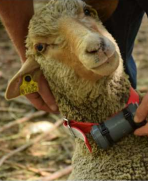

La méthode de suivi des déplacements
Le suivi du troupeau se fait à partir de collier GPS posé au début de la saison d’estive sur les moutons et retiré à la fin de la saison. Ils sont programmés pour acquérir des données toutes les deux minutes entre 5 h et 23 h : les déplacements nocturnes ne sont donc pas étudiés du fait que les brebis soient parquées. Les études de PERRON Rémy ont permis de définir à huit le nombre de colliers GPS nécessaires pour capturer et reconstituer les déplacements de l’ensemble du troupeau.